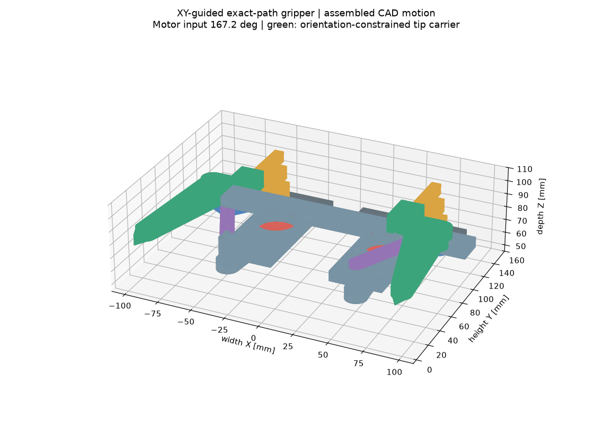
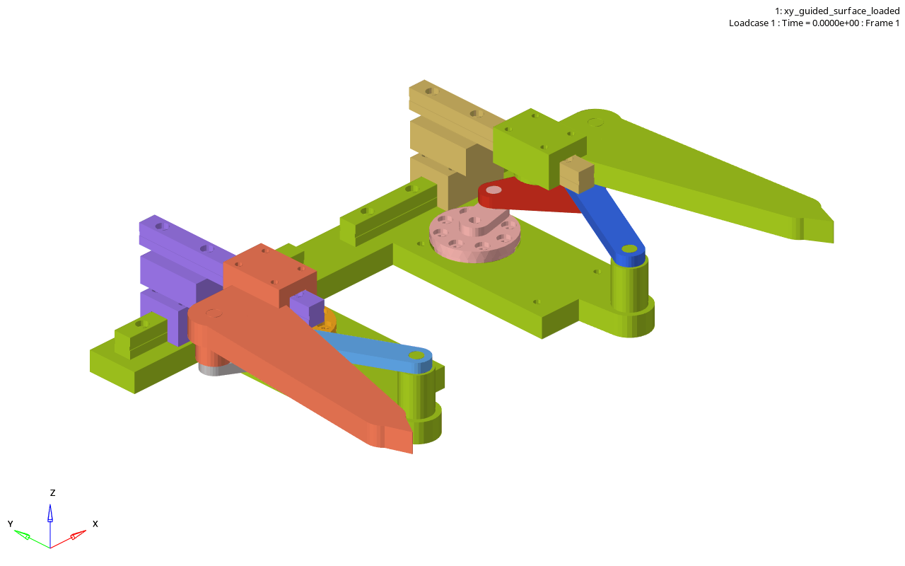

기존2단 평행사변형
청록선은 이상적인 조립 분기, 붉은 면은 기존 OpenRadioss에서 측정한 carrier 각도입니다.
TIP ORIENTATION · ROOT CAUSE → REDESIGN
기존 설계도 이상적인 평행사변형 분기에서는 tip 각도가 0°였습니다. 문제는 전체 스트로크에서 두 번의 toggle을 지나며 그 분기가 하중과 유격에 민감해진다는 점이었습니다. 새 설계는 궤적 생성용 4절 링크와 자세 구속용 직교 가이드를 분리합니다.
SAME MOTOR ANGLE · SAME TIP PATH
청록선은 이상적인 조립 분기, 붉은 면은 기존 OpenRadioss에서 측정한 carrier 각도입니다.
노란 X carriage와 초록 output carrier는 각각 한 축으로만 움직이며 carrier 회전을 막습니다.
FROM Q–K CLOSURE TO 4R + XY GUIDE
핵심 수정은 하나입니다. Q–K 링크가 V₂의 궤적을 만드는 것이 아닙니다. 모터각 φ가 V₂의 위치를 먼저 정하고, Q–K 폐루프는 그 V₂ 위치에서 가능한 2단 각도 ψ를 고릅니다. 재설계는 이 관계를 4R로 그대로 보존하고, XY guide로 TIP 자세만 따로 고정합니다.
PTIP = C₀ + r₁e(φ) + r₂e(ψ)
두 회전벡터를 더하면 원 하나보다 다양한 경로를 만들 수 있고, 두 평행사변형은 출력면의 방향을 유지합니다. 하지만 φ와 ψ가 아직 서로 독립이므로 이 상태는 2 DOF입니다.
TWO STAGES, TWO COORDINATES
한 단의 평행사변형은 자세를 유지하지만 끝점은 원 궤적에 묶입니다. 두 단을 쓰면 서로 다른 두 회전벡터를 합할 수 있습니다.
PTIP = C₀ + r₁e(φ) + r₂e(ψ)
q = [ φ ψ ]ᵀ
φ와 ψ가 독립 ⇒ 2 DOF
원하는 것은 모터 하나로 두 각을 함께 움직이는 것이므로, 기구 안에 ψ=f(φ)라는 물리적 관계가 하나 더 필요합니다.
THE CRITICAL CORRECTION
1단 평행사변형의 고정 offset을 a라 하면, 입력 φ가 들어오는 즉시 V₂ 좌표는 이미 계산됩니다.
P₁(φ)=O₁+r₁e(φ)
V₂(φ)=P₁(φ)+a
φ → V₂(φ) (Q–K보다 먼저)
따라서 Q–K의 역할은 V₂ 경로를 제한하는 것이 아니라, 이미 도착한 V₂에서 2단 body가 취할 각도 ψ를 하나로 고르는 것입니다.
Q–K CLOSES THE LOOP
K는 2단 body에 붙은 점이므로 ψ가 바뀌면 V₂를 중심으로 회전합니다. 반면 Q는 ground에 고정되고 QK 길이 L은 변하지 않습니다.
K=V₂+ρe(ψ+β)
|K−Q|=L
F(φ,ψ)=|V₂(φ)+ρe(ψ+β)−Q|−L=0
독립 좌표 2개에 독립 구속식 1개가 더해져 2−1=1 DOF가 됩니다. 한 조립 branch를 유지하면 φ 하나에 ψ 하나가 대응합니다.
SOLVE ψ EXPLICITLY
s=|V₂−Q|, σ=atan2(V₂−Q)라 두면 삼각형의 세 변 s, ρ, L이 모두 알려집니다.
ψ(φ)=σ(φ)−β+χ cos⁻¹((L²−ρ²−s²)/(2ρs))
χ∈{−1,+1}: 선택한 조립 branch
W=V₂+r₂e(ψ), TIP=W+c
φ → V₂(φ) → ψ(φ) → W(φ) → TIP(φ)
이것이 모터각 φ 하나를 돌렸을 때 최종 TIP 좌표까지 순서대로 계산되는 forward kinematics입니다.
WHY THE REDESIGN IS THE SAME 4R
기존 1단 평행사변형의 a=V₂−P₁는 ground 좌표계에서 일정합니다.
V₂=O₁+r₁e(φ)+a
O′≡O₁+a
V₂=O′+r₁e(φ)
V₂ 경로도 같고 Q–K 폐루프도 같으므로 ψ와 W 경로도 같습니다. 즉 재설계 4R은 기존 함수생성 관계를 그대로 추출한 것입니다.
WHY THE ORTHOGONAL XY GUIDE
4R coupler 위의 W는 원하는 경로를 따라가지만 coupler 자체는 회전합니다. 수평 rail이 x를, 그 위 수직 rail이 y를 따라가게 해 output carrier의 두 점을 항상 같은 높이에 둡니다.
x_X=x_W+h
x_Y=x_X, y_Y=y_W
Y−W=[h,0]ᵀ
θcarrier=atan2(0,h)=0°
XY guide가 W의 경로를 정하는 것은 아닙니다. 4R이 정한 W에 수동으로 끌려가며, 추가 모터 없이 output의 회전만 차단합니다.
WHY THIS MODEL IS OPTIMIZATION-FRIENDLY
먼저 2 DOF inverse kinematics로 목표 경로에 필요한 ψrequired(φ)를 구합니다. 그다음 설계변수 p=[Qx,Qz,ρ,β,L]를 바꾸며 Q–K 폐루프가 만드는 ψlinkage(φ;p)가 그 곡선을 따라가게 합니다.
min J(p)=Σ[ψlinkage(φᵢ;p)−ψrequired,i]²
검증: JTIP(p)=Σ‖PTIP,i(p)−P*ᵢ‖²
주의: cos⁻¹(C)의 미분은 −1/√(1−C²)이므로 |C|→1인 사점 근처에서 민감도가 급증합니다. 따라서 경로 오차뿐 아니라 사점 여유, branch 연속성, transmission angle을 함께 제약해야 합니다.
M = 3N − 2J = 3×5 − 2×7 = 1
따라서 guide가 두 개여도 자유도가 두 개 추가되는 것이 아닙니다. W의 revolute 연결과 두 prismatic guide가 서로 닫힌 사슬을 이루기 때문에 전체 독립 입력은 φ 하나뿐입니다.
아닙니다. V₂는 φ만으로 먼저 정해집니다. Q–K는 그 V₂에서 가능한 ψ를 제한합니다.
W 경로는 나오지만 coupler가 회전하므로 TIP 면의 자세는 고정되지 않습니다.
4R의 W 경로는 유지하면서 carrier 회전만 차단되어, 모터 하나로 경로와 0° 자세를 함께 얻습니다.
WHAT WAS ACTUALLY WRONG
일반 자세에서 W–Wb는 output carrier의 두 점을 정하고, 두 단계 평행사변형은 그 선을 ground와 평행하게 유지합니다. 그래서 이상적인 강체 계산에서 0°가 나오는 것은 맞습니다. 그러나 이 결과는 선택한 조립 분기가 전 스트로크에서 안정적이라는 뜻이 아닙니다.
좌표를 평행사변형 분기로 직접 생성한 뒤 그 좌표의 W–Wb 각도를 다시 측정했습니다. 정상 분기를 확인했을 뿐, toggle의 rank 저하와 다른 분기로 넘어갈 민감도는 검사하지 못했습니다.
모터 고정 시 일반 자세의 자유도는 0이지만 toggle에서 구속 Jacobian rank가 1 감소합니다. 이 순간에는 작은 joint opening도 큰 carrier 회전이나 조립 분기 전환으로 증폭될 수 있습니다.
HOW THE TOPOLOGY CHANGED
기존 W 궤적은 V2–K–W 강체 삼각형과 Q–K rocker가 이미 만듭니다. 따라서 모터축을 O′ = O1 + (V2−P1)로 옮기면 O′–V2 crank 하나로 같은 V2 경로를 직접 만들 수 있습니다. 제거한 두 평행사변형의 자세 역할은 ground 기준 X guide와 X carriage 기준 Y guide가 맡습니다.
INDEPENDENT CHECKS
2001 자세에서 기존 tip 궤적과 최대 차이 1.11×10−13 mm. 수치 정밀도 범위에서 같은 경로입니다.
한쪽 moving body 5개, 5R+2P로 mobility 1. 모터를 잠그면 0 자유도이며 61 자세 모두 full rank, 최소 전달각 27.95°입니다.
61 자세 간섭 0건, STEP 재수입 19/19 PASS. X travel 19.953 mm, Y travel 10.008 mm를 실제 rail envelope에 반영했습니다.
CAD 질량·관성, 인공 질량 0 조건에서 정상 종료. tip angle 0.0000573°, 최대 동적 경로오차 0.374 mm입니다.
JOINT STIFFNESS IS NOT A SERVO GAIN
조인트 강성은 금지된 방향으로 힘을 받을 때 얼마나 벌어지는지를 나타내는 F = kδ의 k입니다. 모터가 shaft 각도를 정확히 맞춰도 핀 구멍, 부시, 브래킷, rail block이 변형되는 양은 encoder로 보이지 않습니다.
중요: 100 N/mm case는 tip 면 회전은 작았지만 pin joint가 최대 1.325 mm 벌어져 약 0.85 s에서 4R이 다른 조립 가지로 넘어갔습니다. 따라서 자세 구속과 궤적 안정성은 함께 확인해야 합니다.
ACTUAL CAD & SOLVER MOTION


BUILD IT THIS WAY
Ø5 hardened shoulder pin과 금속 부시를 사용하고 가능한 곳은 double shear로 지지합니다. 최종 CAD pin seat nominal은 Ø5.04 mm이며 실제 공차는 구매 부품 fit에 맞춥니다.
preload 제품을 선택하고 Y guide는 모멘트 정격 0.54 N·m 이상, 하중 정격 135 N 이상을 목표로 합니다. 두 guide 축의 직각도와 평행도를 조립 datum으로 관리합니다.
두 XM540에 mirror S-curve position 명령을 사용합니다. 20 N 이상적 요구토크 0.1499 N·m에 안전율 3을 적용해 연속 여유 0.45 N·m 이상을 확보하고 contact 후 current를 제한합니다.
home/end-stop 확인 → 무부하 궤적 측정 → 20 N 정적 hold → 저속 동적 test 순으로 진행합니다. tip 각도와 motor current를 함께 기록해야 합니다.
DESIGN DECISION
새 설계는 기존 tip 경로를 유지하면서 1·2단 평행사변형 toggle을 제거하고, output carrier의 회전을 수동 XY guide로 직접 차단합니다.
애니메이션 다시 보기 ↑